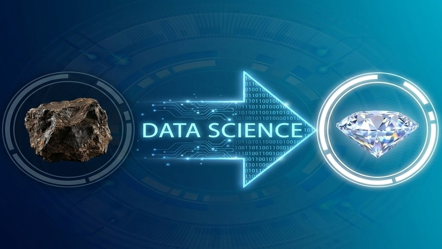
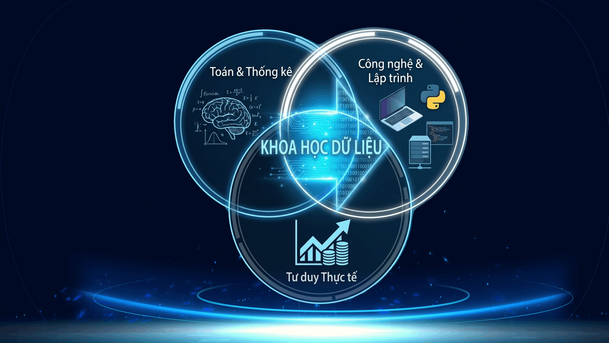
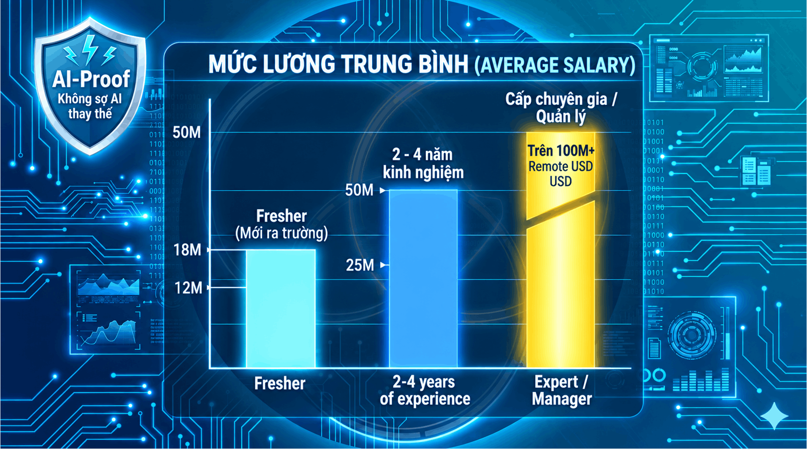

Chào các bạn tân sinh viên năm nhất! Các bạn vừa bước chân vào ngưỡng cửa đại học, nơi mọi sự lựa chọn hôm nay sẽ định hình con người bạn trong 3 năm tới.
Nếu bạn đang tìm kiếm một ngành học không chỉ mang lại thu nhập thuộc top đầu khối công nghệ, mà còn đảm bảo cho một tương lai vững chắc không bao giờ sợ bị AI thay thế, thì chào mừng bạn đến với ngành Khoa học Dữ liệu (Data Science).
Mỗi ngày, bạn lướt TikTok, xem YouTube, lướt Facebook hay thức đêm "chốt đơn" trên Shopee,... Đã bao giờ bạn tự hỏi: “Tại sao cái app này lại biết chính xác video tiếp theo mình muốn xem? Tại sao Shopee lại gợi ý đúng chiếc áo mình đang tìm kiếm?”. Nó hiểu bạn "trúng tim đen" còn hơn cả người yêu cũ! Phép thuật chăng? Hoàn toàn không! Đó chính là sức mạnh của Dữ liệu (Data). Khoa học Dữ liệu không nằm ở phòng thí nghiệm xa xôi, nó đang vận hành thế giới xung quanh bạn từng giây, biến những con số vô tri thành "bộ não" của toàn bộ nền công nghệ hiện đại.
Nhiều người nghĩ học ngành này là làm "thợ gõ code" khô khan. Sai rồi! Hãy hình dung dữ liệu trong thế giới số giống như những quặng đá thô xù xì. Nhà khoa học dữ liệu chính là những "nhà ảo thuật" khai quật và mài giũa đống quặng đó thành những viên kim cương vô giá, giúp các tập đoàn lớn đưa ra các quyết định chiến lược hái ra tiền.

Đến với ngành này, bạn sẽ làm chủ Công thức 3 trong 1 cực ngầu:
- Toán & Thống kê: Để thấu hiểu bản chất của mọi vấn đề sinh hoạt, kinh doanh.
- Công nghệ & Lập trình (Python/R): Chiếc đũa thần để bạn ra lệnh và điều khiển máy tính xử lý hàng triệu dữ liệu trong chớp mắt.
- Tư duy Thực tế: Để giải quyết các bài toán "chạm" vào đời sống: từ tài chính, y tế cho đến giải trí, thể thao.

Năm 2026, khi AI đã len lỏi vào mọi ngóc ngách, các doanh nghiệp không còn hỏi “Dữ liệu là gì?” mà họ khao khát “Làm sao để dùng dữ liệu kiếm ra tiền?”. Chọn Khoa học Dữ liệu là bạn đang nắm trong tay "tấm vé quyền lực" để bước vào mọi lĩnh vực: Ngân hàng, Y tế, Thương mại điện tử, Marketing,...
Báo cáo thị trường lao động mới nhất mang lại những con số biết nói đầy cảm hứng:

Đừng lo lắng nếu cấp 3 bạn không phải chuyên Toán hay học sinh giỏi Tin! Ngành học này chú trọng vào tính ứng dụng và tư duy logic. Nhà trường sẽ đào tạo bạn bài bản từ số 0. Chúng tôi chỉ tìm kiếm 3 DNA này ở bạn:
Sinh viên ra trường có thể đảm nhận 4 vị trí phổ biến: Chuyên viên phân tích dữ liệu (Data Analyst), Chuyên viên phân tích kinh doanh (Business Analyst), Kỹ sư dữ liệu (Data Engineer) hoặc Kỹ sư học máy (Machine Learning Engineer) tại các doanh nghiệp công nghệ, tài chính, bán lẻ và y tế.
Không bao giờ! Sự bùng nổ của AI càng khiến các doanh nghiệp "khát" bạn hơn bao giờ hết, vì chính các bạn là người thu thập dữ liệu sạch, huấn luyện, tối ưu và điều khiển các mô hình AI đó. Bạn đứng trên đỉnh sóng chứ không lo bị sóng nhấn chìm!
Không bắt buộc bạn phải giỏi ngay từ đầu. Ngành học chú trọng vào tính ứng dụng – tức là tư duy logic và khả năng dùng công cụ để giải quyết bài toán thực tế. Kỹ năng lập trình và toán thống kê sẽ được đào tạo bài bản từ cơ bản trong quá trình học.